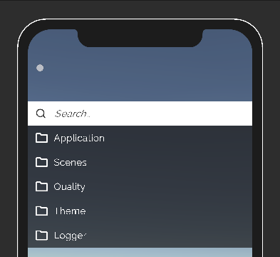

➜ Quick Start
Setup
First, it's recommended to import TextMeshPro's default resources before play, since some of the asset prefabs uses TextMeshPro.
Then make sure your scene have an EventSystem.
Note
If you using Unity's new input system, please see here.
RuntimeDebugAction is designed to be plug & play, once you imported the package,
a Settings ScriptableObject will be created in your project folder Assets/Resources/.

Note
If you encountered weird font size of the debug menu after first import, it's because the TextMeshPro's default resource was imported after the prefab's import, you can simply right click on the asset's Prefabs folder and reimport.
By pressing "Tab", the menu will be enabled, then you will be good to go! You can expect seeing a set of pre-configured debug actions.
See more details of default actions.
On mobile, there will be a touch toggle on the top left of the screen

Input
RuntimeDebugAction support multiple input method for different platform and input devices, and here is some common use case being tested in development.
| Platform | Device | Input Manager / Input System | Note |
|---|---|---|---|
| Standalone | Keyboard | Both | Tested with Windows |
| Standalone | Controller | Input System | Tested with Xbox controller for Windows |
| Mobile | Touch | Both | Tested with Android / iOS |
For the new Input System setup, please see here. With the Input System enable, its possible to support more input devices for the debug menu navigation with custom input action mapping.
Lifecycle
The RuntimeDebugSystem is auto injected to you first scene with the RuntimeInitializeOnLoadMethod method.
Then the system GameObject with the UI canvas will be set to DontDestoryOnLoad and keeps the debug system alive across scene load.
Menu Interaction
The debug menu have full keyboard navigation and touch input handling at the same time since the UI prefab is using Unity's normal UI component.
Note
You are required to have a EventSystem in your scene for event interaction (touch,hover,etc..) of the system to work.
Default Shortcut Keys
| Key | Description |
|---|---|
| Tab | Toggle Menu, Exit Input |
| Arrow Up/ Down | Menu Navigation |
| Enter | Trigger Action, Enter Group, Confirm Input |
Default Action Shortcut Keys
Some default actions has shortcut predefined for ease of access.
| Key | Description |
|---|---|
| L | Toggle Logger |
Settings
To disable the debug menu, go to the RDASettings in your project folder Assets/Resources/.
There are also other settings you can configure there.